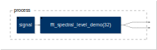
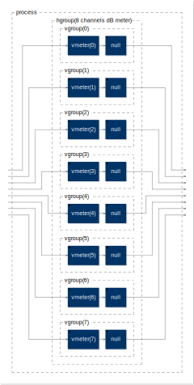
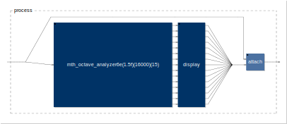
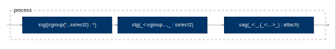
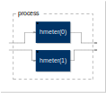

analysis
FFT

// Radix 2 FFT, decimation in time, real and imag parts interleaved
declare name "FFT"; // Faust Fourier Transform :-)
declare author "JOS";
declare license "STK-4.3";
import("stdfaust.lib");
N=32; // FFT size (power of 2)
// Number of frequency bins (including dc and SR/2) is N/2+1
No2 = N>>1;
signal = amp * cosine with {
cosine = select2(k==0,
select2(k==No2,
2.0*os.oscrc(f(k)), // 2x since negative-frequencies not displayed
1-1':+~*(-1) // Alternating sequence: 1, -1, 1, -1
),
1.0); // make sure phase is zero (freq jumps around)
f(k) = float(k) * ma.SR / float(N); // only test FFT bin frequencies
k = hslider("[2] FFT Bin Number",N/4,0,No2,0.001) : int <: _,dpy : attach;
dpy = hbargraph("[3] Measured FFT Bin Number",0,No2);
amp = hslider("[4] Amplitude",0.1,0,1,0.001);
};
process = signal : dm.fft_spectral_level_demo(N) <: _,_;
dbmeter

declare name "dbmeter";
declare version "1.0";
declare author "Grame";
declare license "BSD";
declare copyright "(c)GRAME 2006";
//-------------------------------------------------
// A dB Vumeter
//-------------------------------------------------
import("stdfaust.lib");
process = hgroup("8 channels dB meter", par(i,8, vgroup("%i", vmeter(i) : null)))
with {
null(x) = attach(0,x);
envelop = abs : max(ba.db2linear(-70)) : ba.linear2db : min(10) : max ~ -(80.0/ma.SR);
vmeter(i, x) = attach(x, envelop(x) : vbargraph("chan %i[unit:dB]", -70, 10));
hmeter(i, x) = attach(x, envelop(x) : hbargraph("chan %i[unit:dB]", -70, 10));
};
spectralLevel

declare name "spectralLevel";
declare version "0.0";
declare author "JOS, revised by RM";
declare description "Demonstrates mth_octave_spectral_level in a standalone GUI.";
import("stdfaust.lib");
process = dm.spectral_level_demo;
spectralTiltLab

// example exercising filters.lib's spectral_tilt_demo
declare name "spectralTiltLab";
import("stdfaust.lib");
N = 10; // Number of pole-zero pairs to use
process = sig(dm.sawtooth_demo)
: stg(ba.bypass1(bp,dm.spectral_tilt_demo(N)))
<: sag(dm.spectral_level_demo)
with {
bp = stg(checkbox("[0] Bypass Spectral Tilt"));
stg(x) = vgroup(
"[1] Spectral Tilt Filter [tooltip: See Faust's filters.lib for spectral_tilt_demo]",x);
sig(x) = vgroup(
"[2] Test Signal [tooltip: See Faust's oscillator.lib for sawtooth_demo]",x);
sag(x) = vgroup(
"[4] Spectrum Analyzer [tooltip: See Faust's filters.lib for spectral_level_demo]",x);
};
vumeter

declare name "vumeter";
declare version "1.0";
declare author "Grame";
declare license "BSD";
declare copyright "(c)GRAME 2006";
//-------------------------------------------------
// Simple vumeter
//-------------------------------------------------
import("stdfaust.lib");
process = hmeter(0), hmeter(1)
with {
vmeter(i, x) = attach(x, envelop(x) : vbargraph("chan %i[2][unit:dB]", -70, +5));
hmeter(i, x) = attach(x, envelop(x) : hbargraph("chan %i[2][unit:dB]", -70, +5));
envelop = abs : max ~ -(1.0/ma.SR) : max(ba.db2linear(-70)) : ba.linear2db;
};